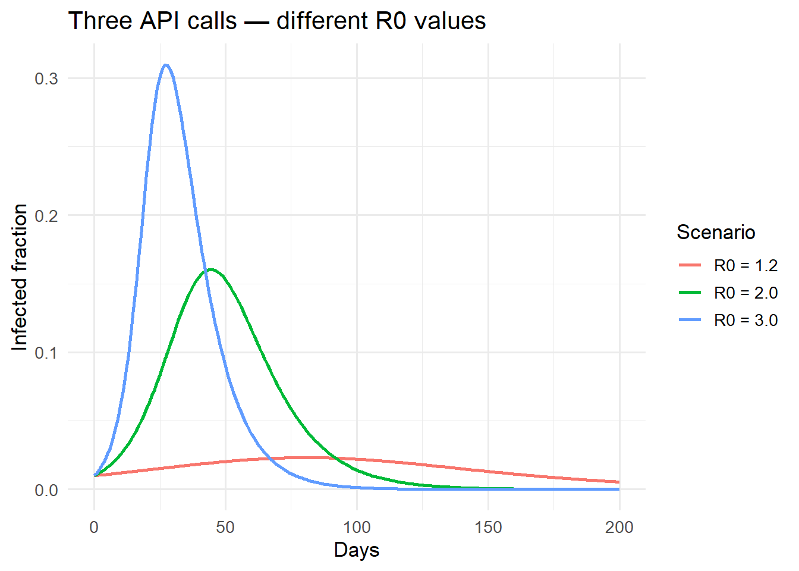

From ‘works on my machine’ to ‘runs anywhere’ — images, layers, and Compose. Post 3 in the Building Digital Twin Systems series.
digital twin
software engineering
Docker
deployment
reproducibility
Author
Jong-Hoon Kim
Published
April 23, 2026
1 The deployment problem
In Post 2 we built an epidemic model API. It runs on your laptop with uvicorn sir_api.main:app. To share it with a colleague you send them your code and they spend an afternoon debugging Python version mismatches, missing libraries, and operating system differences.
To deploy it on a cloud server you have to configure the operating system, install Python, install your packages, and hope nothing changes when the server updates itself. Six months later the server reboots after a security patch and your API silently breaks because NumPy 1.26 was replaced by 2.0.
Docker solves this. A container bundles your application, all its Python packages, and a slice of the operating system into a single artifact — an image — that runs identically on any machine that has Docker installed (1). The same image runs on your laptop, your colleague’s Windows machine, a Linux cloud server, and a Kubernetes cluster.
2 Core concepts in five minutes
Concept
Analogy
What it is
Image
Recipe / ISO file
A read-only snapshot: OS layer + your app + dependencies
Download Docker Desktop from docker.com. On Windows and macOS it provides a graphical interface and manages the Linux VM that runs containers. Verify the installation:
docker--versiondocker run hello-world
The second command downloads a tiny test image from Docker Hub and runs it. If you see “Hello from Docker!” the installation works.
4 Writing the Dockerfile for the epidemic model API
The Dockerfile for the FastAPI service from Post 2:
# Base image: official Python slim (smaller than full)FROM python:3.12-slim# Create a non-root user for securityRUNadduser--disabled-password--gecos"" appuser# Set working directory inside the containerWORKDIR /app# Copy only the dependency file first (better layer caching)COPY pyproject.toml .# Install dependenciesRUNpip install --no-cache-dir--upgrade pip \&&pip install --no-cache-dir .# Copy application code (changes more often than deps)COPY sir_api/ sir_api/# Switch to non-root userUSER appuser# Tell Docker which port the app listens on (documentation only)EXPOSE 8000# Command to run when the container startsCMD ["uvicorn", "sir_api.main:app","--host", "0.0.0.0","--port", "8000","--workers", "2"]
4.1 Why the order matters
Docker builds images in layers and caches each one. If pyproject.toml has not changed, Docker reuses the cached layer that installed your packages — even if you changed application code. By copying pyproject.toml first and your source code second, you avoid reinstalling all dependencies on every code change. On a large project this saves several minutes per build.
# Build — assigns the tag "sir-api:0.1.0" to the imagedocker build -t sir-api:0.1.0 .# Run — maps host port 8000 to container port 8000docker run -p 8000:8000 sir-api:0.1.0
The API is now accessible at http://localhost:8000. The container has no access to your laptop’s file system or other processes unless you explicitly grant it. This isolation is also a security feature.
# Run in the background (detached mode)docker run -d--name epidemic-api -p 8000:8000 sir-api:0.1.0# Check it is runningdocker ps# Follow logsdocker logs -f epidemic-api# Stopdocker stop epidemic-api
6 Multi-container applications with Docker Compose
A real digital twin product has more than one service: the API, a database, perhaps a background worker. Docker Compose describes all of them in a single YAML file and starts them together.
# Start everything (builds the api image if needed)docker compose up --build# Stop and remove containers (data volume persists)docker compose down# Stop and remove everything including the database volumedocker compose down -v
The depends_on with service_healthy ensures the API only starts once the database is accepting connections. Without this, the API might crash on startup trying to connect to a database that is not yet ready.
7 Environment variables and secrets
Passwords must never be in a Dockerfile or committed to git. Docker passes them as environment variables.
# Pass a secret at runtimedocker run -p 8000:8000 \-e DATABASE_URL="postgresql://..."\-e API_KEY="..."\ sir-api:0.1.0
For local development with Compose, store secrets in a .env file and add .env to .gitignore:
# docker-compose.yml — reads from .env automaticallyservices:api:env_file: .env
8 A note on R containers
The Rocker project (2) provides production Docker images for R:
# R-based model wrapped in a Plumber APIFROM rocker/r-ver:4.3.2RUNinstall2.r plumber deSolveCOPY plumber_api.R /app/plumber_api.REXPOSE 8000CMD ["Rscript", "-e", "pr <- plumber::plumb('/app/plumber_api.R'); pr$run(port=8000, host='0.0.0.0')"]
plumber is the R equivalent of FastAPI. The same containerisation principles apply regardless of language.
9 Verifying the container responds correctly
# Simulate what the containerised API would returnsir_euler <-function(S0, I0, beta, gamma, days, dt =0.5) { N <- S0 + I0 out <-data.frame(time =seq(0, days, dt),S =NA, I =NA, R =NA) S <- S0; I <- I0; R <-0for (i inseq_len(nrow(out))) { out[i, ] <-c((i -1) * dt, S, I, R) inf <- beta * S * I / N * dt rec <- gamma * I * dt S <- S - inf; I <- I + inf - rec; R <- R + rec } out}library(ggplot2)scenarios <-list(list(beta =0.3, gamma =0.1, label ="R0 = 3.0"),list(beta =0.2, gamma =0.1, label ="R0 = 2.0"),list(beta =0.12, gamma =0.1, label ="R0 = 1.2"))results <-do.call(rbind, lapply(scenarios, function(s) { df <-sir_euler(9900, 100, s$beta, s$gamma, 200) df$scenario <- s$label df}))ggplot(results[results$time %%1==0, ],aes(time, I / (results$I[1] + results$S[1]),colour = scenario)) +geom_line(linewidth =1) +labs(x ="Days", y ="Infected fraction",colour ="Scenario",title ="Three API calls — different R0 values") +theme_minimal(base_size =13)

Direct comparison of the Euler SIR output (representing what the containerised API returns) against the analytical endemic prevalence. Container behaviour is language-independent.
10 Summary
A Docker container packages your model API so it runs identically on any machine. Key habits:
Order Dockerfile layers from least-changed to most-changed for fast builds
Never hard-code secrets — use environment variables
Use Docker Compose to manage multi-service applications locally
Use named volumes to persist database data across container restarts
The next post shifts from deployment infrastructure back to the model itself. Post 4 introduces the Ensemble Kalman Filter — the real-time model updating algorithm that turns a static simulation into an operational digital twin.
11 References
1.
Boettiger C. An introduction to Docker for reproducible research. ACM SIGOPS Operating Systems Review. 2015;49(1):71–9. doi:10.1145/2723872.2723882
2.
Nüst D, Eddelbuettel D, Bennett D, Cannoodt R, Clark D, Daróczi G, et al. The rockerverse: Packages and applications for containerised development and deployment of R environments. The R Journal. 2020;12(1):437–61. doi:10.32614/RJ-2021-001